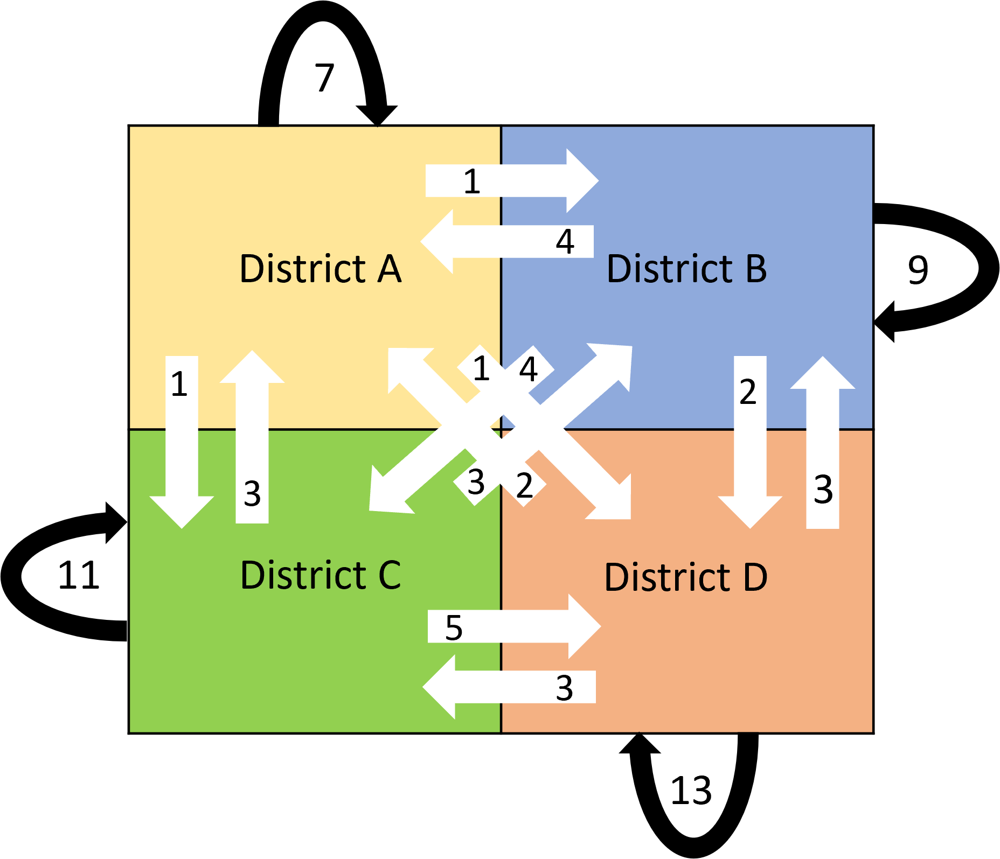
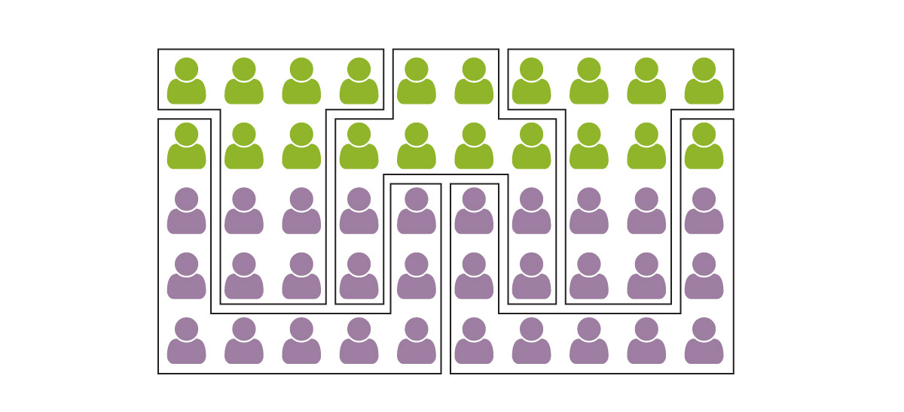
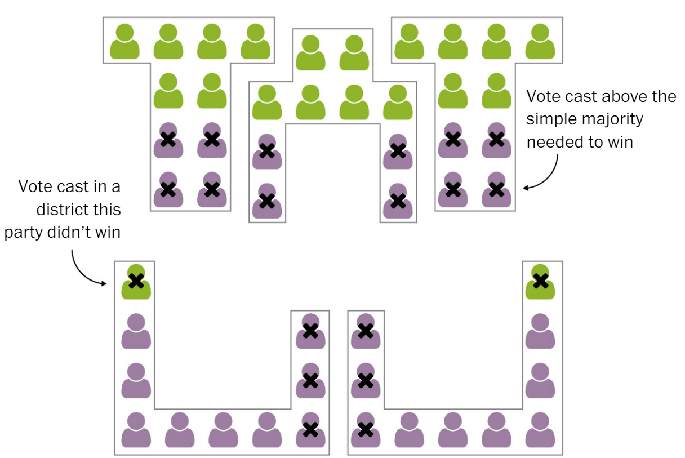
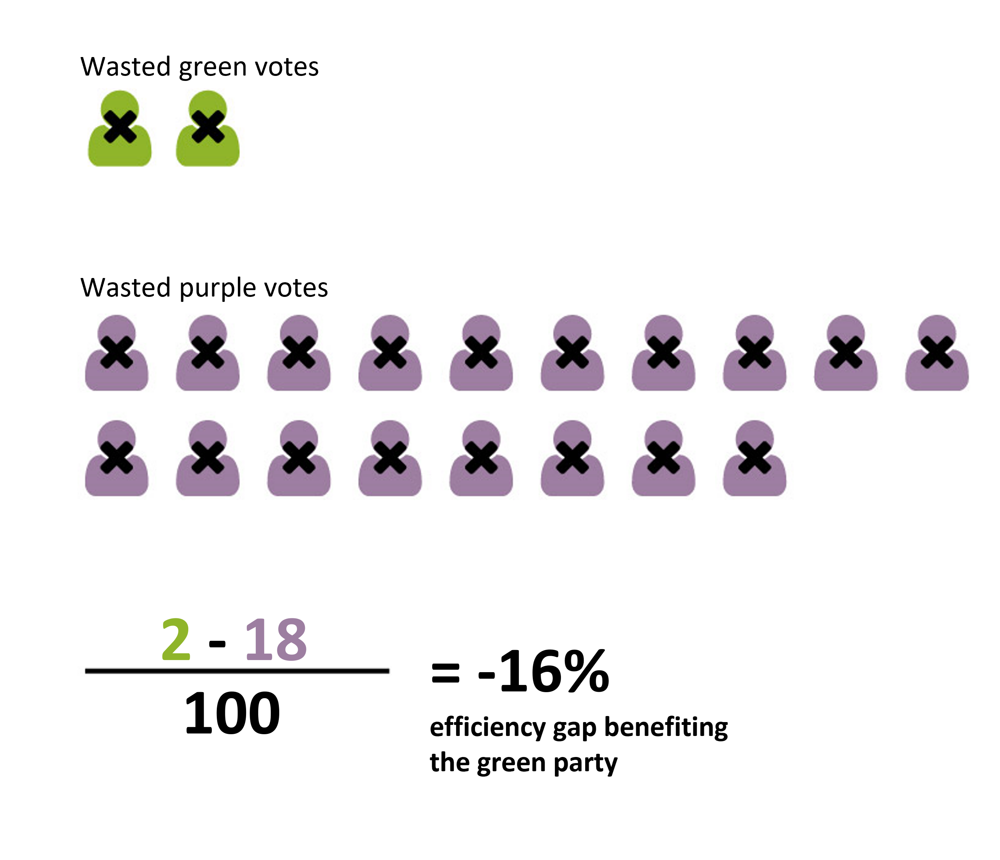

What is redistricting?
In the United States, political districts are redrawn every 10 years to reflect new
Census data. When redrawing electoral district boundaries, legislators may try to
create districts so as to create an advantage for their party: this is gerrymandering.
Political gerrymandering is legal as long as it is not excessive, though what
constitutes "excess" is difficult to define. While gerrymandering for the purpose of
gaining partisan advantage is legal to some extent, gerrymandering to disenfranchise
voters on a racial basis is illegal. In either case, gerrymandering seeks to give one party
more representatives for the same number of votes, thus diluting the voting power of other parties.
Though political gerrymandering is legal and to some degree unavoidable, many scholars
agree that it is harmful for our democracy: if voters feel like their vote doesn't count, they
lose faith in our government.
How to evaluate redistricting maps?
While there is still debate about the goals of redistricting and the criteria that should be used for the evaluation of redistricting plans, certain concepts show up repeatedly in plan requirements and in legal challenges. Two of the most common ways to evaluate redistricting plans are with geometric compactness and fairness measurements. Outside of these common requirements, researchers in different fields have proposed novel metrics for evaluating redistricting plans, with the goal of improving upon existing criteria to produce better district maps. Below, we describe some of the common metrics used for district evaluation, as well as a new metric termed the interaction ratio.
Interaction Ratio:
A communitiy is a group of people that have more in common with each other, on average, than they do with
people from another group. Redistricting groups people across geographic space, and therefore can either split
communities or keep them intact.
Redistricting laws in many states have explicit preferences for redistricting plans that follow existing boundaries,
such as county lines, which implicitly encourages communities to be kept intact. Frequently, in legal challenges
to gerrymandered districts, split municipalities are shown as evidence that natural communities were split
in order to gain partisan advantage.
Communities of interest and majority-minority districts are two explicit ways of keeping particular communities intact,
and both function by keeping groups of people with common policy concerns in a single district. For communities of interest,
people from such a group self identify and advocate for being kept in a single interest so that they can elect a representative
that will represent their particular interests. Majority-minority districts are similar, though they are required by the
Voting Rights Act so as to not "improperly dilute minorities voting power."
None of these community formations, however, attempt to maintain communities across all districts.
Framed as an optimization problem, we might ask how we could make districts such that we maintain as many communities
as possible within each district, such that we minimize community splitting across all districts. While optimization
is redistricting is notoriously difficult, we attempt here to show at least what a range of possibilities might look like
if such a metric were incorporated into redistricting law.
For such an optimization, we need both a formula for defining community strength, and a measurement to use in that formula.
For the measurement, we employ human mobility flows from Safegraph. The mobility flows consist of anomymized cellphone counts
that have moved from one census block group to another during a given time span. To quantify community strength, we use
the interaction ratio, which is related to the frequently used modularity measurement in community detection research. We define the interaction ratio here as the sum of district intra flow
divided by the sum of district inter flows, where intra flows are mobility flows originating in one district and ending in that same
district, while inter flows are mobility flows originating in one district and ending in another. By summing across all districts
to calculate the interaction ratio, we can get a sense of how the districting plan, as a whole, keeps communties intact.


Efficiency Gap
"[The efficiency gap] represents the difference between the parties’ respective wasted votes in an
election—where a vote is wasted if it is cast (1) for a losing cadidate, or
(2) for a winning candidate but in excess of what she
needed to prevail. Large numbers of votes commonly are cast for
losing candidates as a result of the time-honored gerrymandering technique of “cracking.”
Likewise, excessive votes often are cast for winning candidates thanks to the equally
age-old mechanism of “packing.” The efficiency gap essentially aggregates all of a district
plan’s cracking and packing choices into a single, tidy number."
(Stephanopoulos, McGhee, 2015).
For more reading on the efficiency gap, you can visit
ballotpedia.
To demonstrate how gerrymandering uses both packing and cracking to
change election outcomes, we present the following example from
the Washington Post:
In this example, the Purple and Green parties are competing to win seats in 5 equal-population
districts, and votes for a given party a represented by icons of the same color. The Green party
receives 20/50 votes, yet is able to win 3/5 seats due to how the districts were arranged.

To achieve this outcome, Purple voters are "packed" into two districts such they was "waste" votes in those districts, as they receive many more votes than simple majorrity required to win those two districts. Conversely, almost no Green votes are "wasted" on competing for those two districts - instead, the Green votes are largely concentrated in the upper three districts. In those same districts, the Green party is able to narrowly win all three elections, since the purple voters were "cracked" such they are a narrow minority in the upper three districts.

allowing Green to win a majority
of districts while winning a minority of the votes.

allowing Green to win a majority
of districts while winning a minority of the votes.
Compactness
Compactness is metric that is used in redistricting to help guard against gerrymandering. Compactness can be defined geometrically in many ways, but the general idea in redistricting is to avoid long, odd shapes that demonstrate intent to unnaturally split communities in such as way as to crack and pack districts. For more specifics on compactness, you can refer to ballotpedia. Here, we use the Polsby-Popper definition of compactness, which essentially compares the area and perimeter of a district. The range of values of this metric is from 0 to 1, where 0 is the least compact and 1 is the most compact (the district is circular).
Metadata
The following table describes the attributes used in the plots and interactive maps. Demographic and voting data was acquired from Maptitude.
| Attribute | Description |
|---|---|
| population | Total population count (all ages) |
| White | White population count |
| Black | Black population count |
| HISPANIC | Hispanic population count |
| Asian | Asian population count |
| AmIndian | American Indian population count |
| PISLAND | Pacific Islander population count |
| D_votes | Vote count for democratic candidate in the 2018 US House election |
| R_votes | Vote count for republican candidate in the 2018 US House election |
| D_percents | Percent of total votes won by democrat candidate in the 2018 US House election |
| R_percents | Percent of total votes won by republican candidate in the 2018 US House election |
| intra_flows | Total count of population-level mobility flows originating and ending in the same district |
| inter_flows | Total count of population-level mobility flows originating in one district and ending in another |